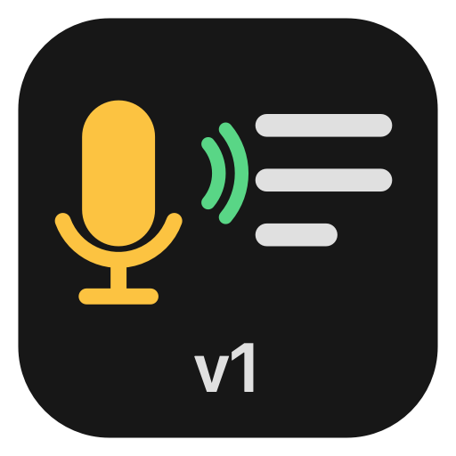
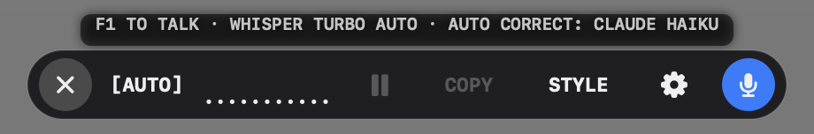
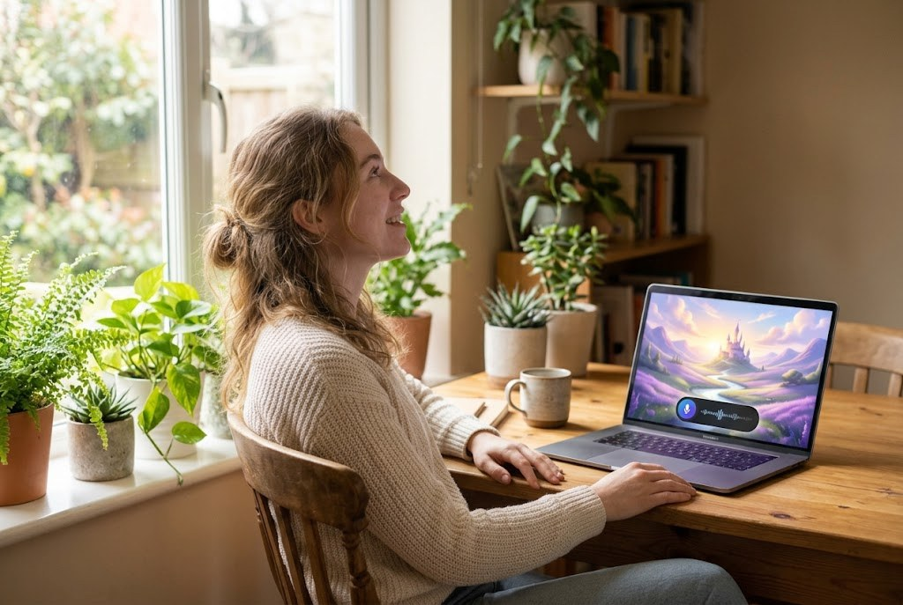
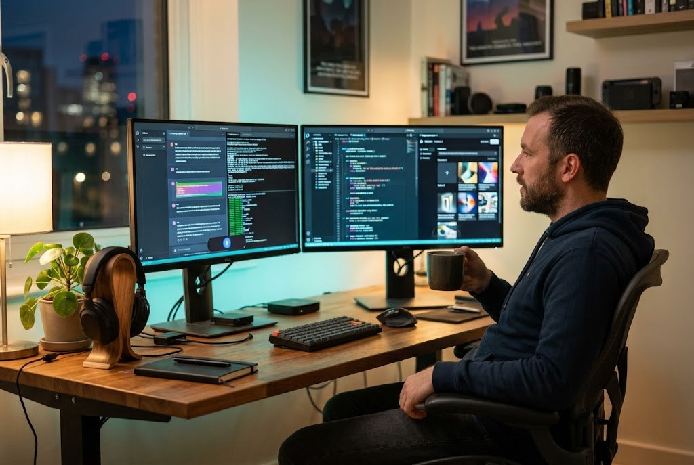
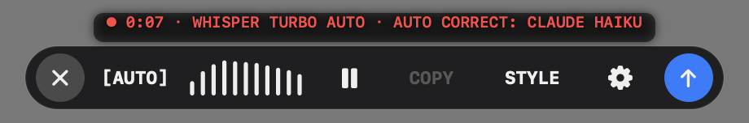
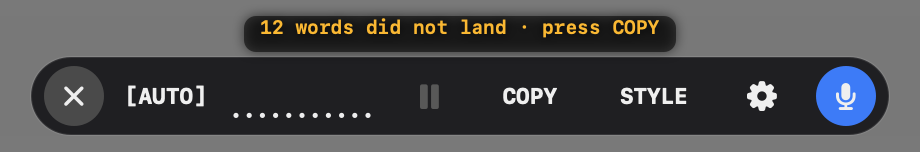
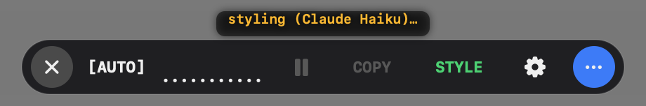

Voice to Text (Mantra)
Press F1, say what you want, press F1 again. Your words appear wherever the cursor is: a prompt for an AI, a line of code, an email, a chat. Whisper Turbo hears you on your own computer, in English, Croatian and many other languages, and nothing you say leaves the machine.

Version 19 · Mac: macOS 14 or newer, Apple Silicon (M1 and later), 3 MB · Windows: Windows 10 or 11, 64-bit, 74 MB (ARM version) · the speech model (547 MB) downloads once from the app's settings.


On your computer
Whisper large-v3-turbo runs locally, on the Mac's GPU through Metal, on Windows on the processor. No account, works offline.
Types where you are
The words go into the text box you were typing in, in any app. If there is none, the blob waits and COPY lights up white.
Auto correct
With your own Anthropic key, Claude cleans each take: repeats and filler words gone, punctuation fixed, your words and meaning kept. STYLE lights up white when it is on.
STYLE any text
Click into any text box and press STYLE: the selection, or the whole text, is corrected in place.
Croatian | English | auto-detect
One press on the language badge switches it: HR listens for Croatian, EN for English, AUTO finds the language of every take by itself and writes it in the language you spoke, even when you change from one take to the next.
History
Every take is kept for a day with its audio, so a take can be copied again or transcribed again.
The blob



| F1 | start a take; press again to send it (another key can be chosen in settings) |
| Esc | throw the take away while it records |
| COPY | white when the words found no text box: press it, then paste where you want them |
| STYLE | white when auto correct is on, green while it works |
| [AUTO] [EN] [HR] | the language switch: Croatian, English, or auto-detect for each take |
| ⚙ | language, auto correct, history, settings |
Install
Mac
- Unzip
VoiceToText-mac.zipand drag Voice to Text (Mantra) into Applications. - Open it. The first time, macOS says it cannot check the app: it is signed by its author, not through Apple's paid program. Go to System Settings › Privacy & Security, scroll down and press Open Anyway.
- Settings opens by itself: press Download the model (547 MB, once). It goes on from where it stopped if the connection drops or you quit.
- Allow the Microphone, and Accessibility so it can type into other apps.
- Optional: paste your Anthropic key (console.anthropic.com) for auto correct and STYLE.
Windows
- Unzip
VoiceToText-win-x64.zip(orVoiceToText-win-arm64.zip) into a folder of your choice. - Run VoiceToTextMantra.exe. If Windows shows "Windows protected your PC", press More info, then Run anyway: the app is free and not signed through a paid certificate.
- If Windows lacks the Microsoft Visual C++ runtime, the app says so and its Get it link opens Microsoft's download; install it and start the app again.
- In ⚙ › Settings press Download the model (547 MB, once). If the connection drops or you close the app, the download goes on from where it stopped.
- Optional: paste your Anthropic key for auto correct and STYLE.
On Windows, Whisper runs on the processor: a take takes a few seconds on a recent PC, longer on an older one.
Privacy
Your voice is turned into text on your own computer and is never uploaded. The app has no account and no tracking. Only if you add an Anthropic key and choose auto correct or press STYLE is the text (never the audio) sent to Anthropic to be cleaned, with your key.